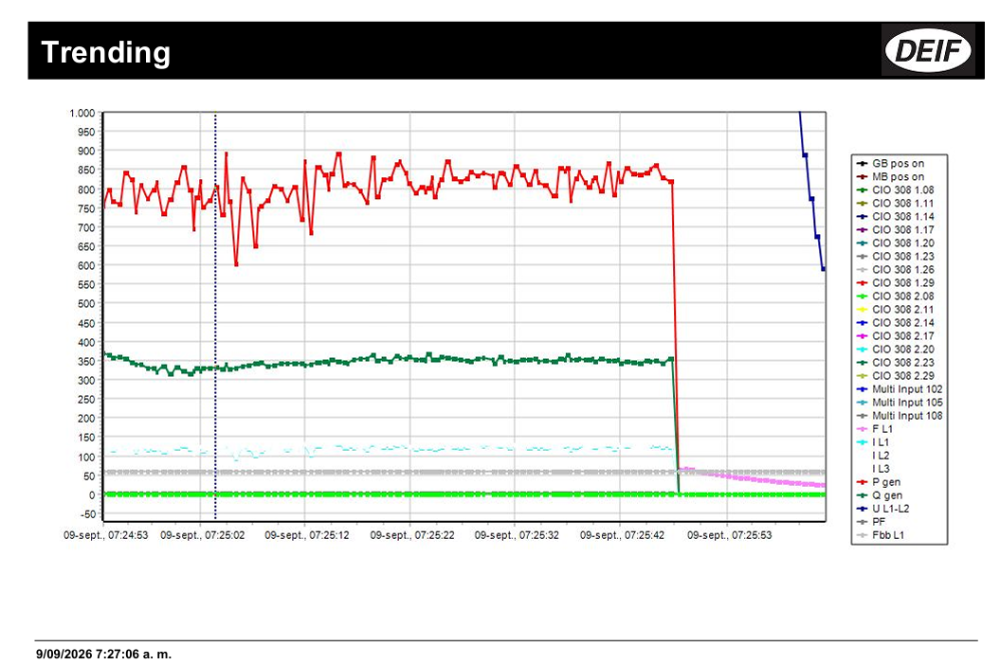
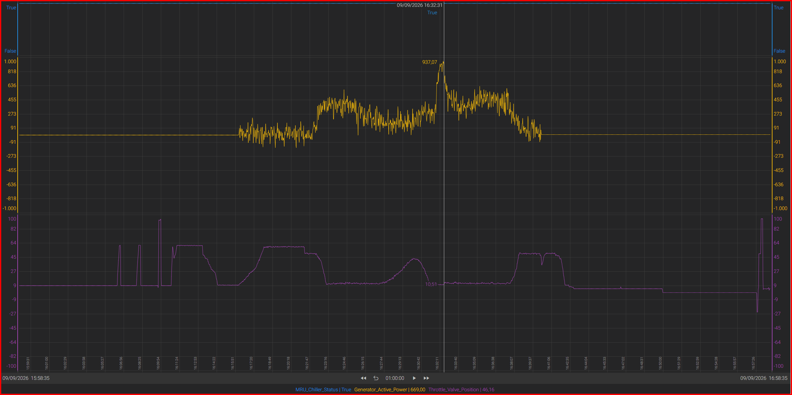

La unidad CPW-02 se encontraba operando con gas de Moqueta en modo de reparto de carga.
A las 07:25 h, por solicitud de CCM, se realizó un deslastre de carga con el objetivo de efectuar el cambio de combustible
de gas de Moqueta a gas tratado. Posteriormente, se intentó reincorporar la unidad al sistema.
Descripción de la falla
Evento: durante la reincorporación tras el cambio de combustible se presentó condición anormal de operación. Modo de falla: inestabilidad de frecuencia y dificultad para mantener RPM y carga, con temperaturas de cilindros fuera de rango. Evidencia: trend DEIF ~07:25 con hunting de potencia y trip; alarma 1460 P> a las 07:27:45 (798 kW) seguida de Ext. Eng. Stop 07:28:14;
a lo largo del día 8 disparos P>, 11 G f>, 5 Hz/V failure, 3 GB Sync failure y 19 Ext. Eng. Stop;
HMI con delta de temperatura de cilindros ~315 °C;
gráfica de salida 15:58–16:58 con pico 937,07 kW a throttle 10,51 % (alarma 1450 P> 16:32:24 · 922 kW).
Cambio de filtro de aire y ajustes de control (~desde 08:00) sin mejora significativa.
Análisis de la falla
Causa inmediata (confirmada): desplazamiento/giro de la clapeta de la válvula throttle.
Evidencia física en inspección mecánica; la gráfica muestra potencia 937 kW con throttle reportado en 10,51 % (desacople posición/flujo). Causa probable (presunta): detonación durante el arranque, capaz de desplazar la clapeta. No hay registro objetivo de knock en los logs disponibles. Causa raíz: pendiente de confirmación. Se requiere analizar gas (presión/caudal/composición), AFR, ignición, detonación y señales de throttle
(comando 0–10 V vs feedback vs posición mecánica) en ventanas 07:25–08:00 y 16:32. Efecto / impacto: operación inestable; múltiples salidas/intentos; recuperación ~18:49 (MB ON / Fixed power ~713 kW).
Clasificación RCA: causa inmediata confirmada · causa probable detonación · causa raíz en investigación.
La clapeta girada demuestra la condición física, no por sí sola el origen del giro.
Acciones correctivas / preventivas
ElectrónicoEléctricoHidráulicoNeumáticoMecánico
1) Inspección y corrección de válvula throttle (clapeta, eje, accionamiento, posicionamiento).
2) Restablecer posición y calibración según fabricante.
3) Verificar admisión de aire (filtro, ductos, conexiones).
4) Inspeccionar combustible (presión, caudal, gas tratado).
5) RCA abierto: registros detonación / MAP-MAT / AFR / ignición / throttle en 07:25–08:00 y 16:32.
6) Preventivo: checklist de cambio Moqueta → gas tratado antes de cargar/sincronizar.
Partes / pruebas
Partes: actuador/posicionador Sauter AVM234SF132U (PUP 1106414). Intervención: inspección, corrección y calibración de clapeta/throttle. Pruebas: verificar comando vs feedback vs posición mecánica; arranque/sincronismo sin P>/f>/sync failure; carga gradual en gas tratado;
ΔT cilindros dentro de límites; vigilar 24–48 h sin recurrencia. Recuperación operativa ~18:49.
Acciones de mejora
Ítem
Descripción
Responsable
Fecha
Cumplimiento
Seguimiento
1
Cerrar causa raíz con evidencia de registros (detonación / gas / throttle) en ventanas 07:25–08:00 y 16:32.
Confiabilidad O&M
Pendiente
Abierto
RCA abierto
2
Protocolo de cambio de combustible Moqueta ↔ gas tratado antes de reincorporación (gas, mezcla, ignición).
Control / O&M
Pendiente
Abierto
Preventivo
PROCESO: GENERACIÓN DE ENERGÍA
FO-GE-033 No. 8 · EVIDENCIA
PÁGINA 2 DE 2
Anexos del 09-sep-2026. Alarmas/eventos DEIF, tendencia de reincorporación y gráfica de salida potencia vs throttle.
Tendencia DEIF · ~07:25 — hunting de potencia y trip al inicio del evento tras cambio de gas.

Salida potencia vs throttle · 15:58–16:58 — a las 16:32:31, P = 937,07 kW con throttle = 10,51 % (desacople).

PROCESO: GENERACIÓN DE ENERGÍA
FO-GE-033 No. 8 · EVIDENCIA
PÁGINA 3 DE 3
HMI · Delta temperatura de cilindros alto — combustión irregular durante la falla.